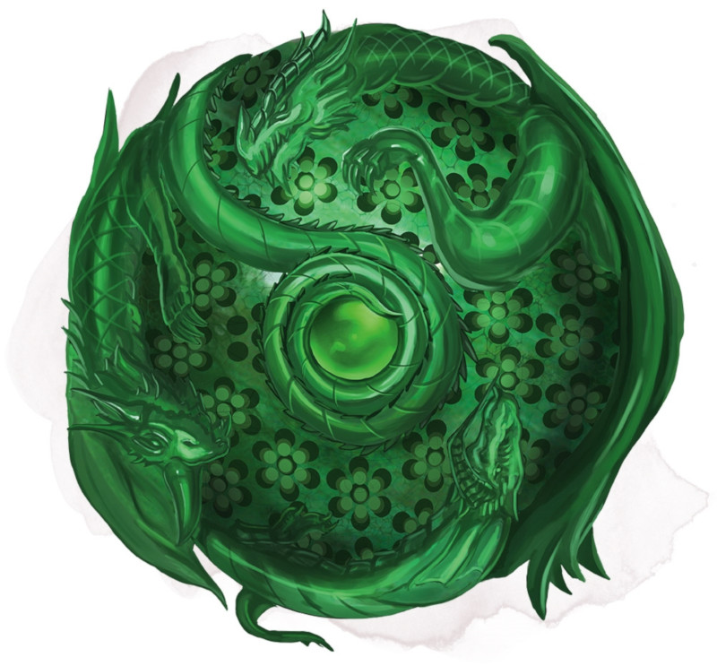

Orb of Dragonkind
[ Orbe des dragons ]
Wondrous item, artifact (requires attunement)
Ages past, elves and humans waged a terrible war against evil dragons. When the world seemed doomed, powerful wizards came together and worked their greatest magic, forging five Orbs of Dragonkind (or Dragon Orbs) to help them defeat the dragons. One orb was taken to each of the five wizard towers, and there they were used to speed the war toward a victorious end. The wizards used the orbs to lure dragons to them, then destroyed the dragons with powerful magic.
As the wizard towers fell in later ages, the orbs were destroyed or faded into legend, and only three are thought to survive. Their magic has been warped and twisted over the centuries, so although their primary purpose of calling dragons still functions, they also allow some measure of control over dragons.
Each orb contains the essence of an evil dragon, a presence that resents any attempt to coax magic from it. Those lacking in force of personality might find themselves enslaved to an orb.
An orb is an etched crystal globe about 10 inches in diameter. When used, it grows to about 20 inches in diameter, and mist swirls inside it.
While attuned to an orb, you can use an action to peer into the orb's depths and speak its command word. You must then make a DC 15 Charisma check. On a successful check, you control the orb for as long as you remain attuned to it. On a failed check, you become charmed by the orb for as long as you remain attuned to it.
While you are charmed by the orb, you can't voluntarily end your attunement to it, and the orb casts suggestion on you at will (save DC 18), urging you to work toward the evil ends it desires. The dragon essence within the orb might want many things: the annihilation of a particular people, freedom from the orb, to spread suffering in the world, to advance the worship of Tiamat, or something else the DM decides.
Random Properties. An Orb of Dragonkind has the following random properties:
• 2 minor beneficial properties
• 1 minor detrimental property
• 1 major detrimental property
Spells. The orb has 7 charges and regains 1d4 + 3 expended charges daily at dawn. If you control the orb, you can use an action and expend 1 or more charges to cast one of the following spells (save DC 18) from it: cure wounds (5th-level version, 3 charges), daylight (1 charge), death ward (2 charges), or scrying (3 charges).
You can also use an action to cast the detect magic spell from the orb without using any charges.
Call Dragons. While you control the orb, you can use an action to cause the artifact to issue a telepathic call that extends in all directions for 40 miles. Evil dragons in range feel compelled to come to the orb as soon as possible by the most direct route. Dragon deities such as Tiamat are unaffected by this call. Dragons drawn to the orb might be hostile toward you for compelling them against their will. Once you have used this property, it can't be used again for 1 hour.
Destroying an Orb. An Orb of Dragonkind appears fragile but is impervious to most damage, including the attacks and breath weapons of dragons. A disintegrate spell or one good hit from a +3 magic weapon is sufficient to destroy an orb, however.
As the wizard towers fell in later ages, the orbs were destroyed or faded into legend, and only three are thought to survive. Their magic has been warped and twisted over the centuries, so although their primary purpose of calling dragons still functions, they also allow some measure of control over dragons.
Each orb contains the essence of an evil dragon, a presence that resents any attempt to coax magic from it. Those lacking in force of personality might find themselves enslaved to an orb.
An orb is an etched crystal globe about 10 inches in diameter. When used, it grows to about 20 inches in diameter, and mist swirls inside it.
While attuned to an orb, you can use an action to peer into the orb's depths and speak its command word. You must then make a DC 15 Charisma check. On a successful check, you control the orb for as long as you remain attuned to it. On a failed check, you become charmed by the orb for as long as you remain attuned to it.
While you are charmed by the orb, you can't voluntarily end your attunement to it, and the orb casts suggestion on you at will (save DC 18), urging you to work toward the evil ends it desires. The dragon essence within the orb might want many things: the annihilation of a particular people, freedom from the orb, to spread suffering in the world, to advance the worship of Tiamat, or something else the DM decides.
Random Properties. An Orb of Dragonkind has the following random properties:
• 2 minor beneficial properties
• 1 minor detrimental property
• 1 major detrimental property
Spells. The orb has 7 charges and regains 1d4 + 3 expended charges daily at dawn. If you control the orb, you can use an action and expend 1 or more charges to cast one of the following spells (save DC 18) from it: cure wounds (5th-level version, 3 charges), daylight (1 charge), death ward (2 charges), or scrying (3 charges).
You can also use an action to cast the detect magic spell from the orb without using any charges.
Call Dragons. While you control the orb, you can use an action to cause the artifact to issue a telepathic call that extends in all directions for 40 miles. Evil dragons in range feel compelled to come to the orb as soon as possible by the most direct route. Dragon deities such as Tiamat are unaffected by this call. Dragons drawn to the orb might be hostile toward you for compelling them against their will. Once you have used this property, it can't be used again for 1 hour.
Destroying an Orb. An Orb of Dragonkind appears fragile but is impervious to most damage, including the attacks and breath weapons of dragons. A disintegrate spell or one good hit from a +3 magic weapon is sufficient to destroy an orb, however.
Dungeon Master´s Guide (SRD)
